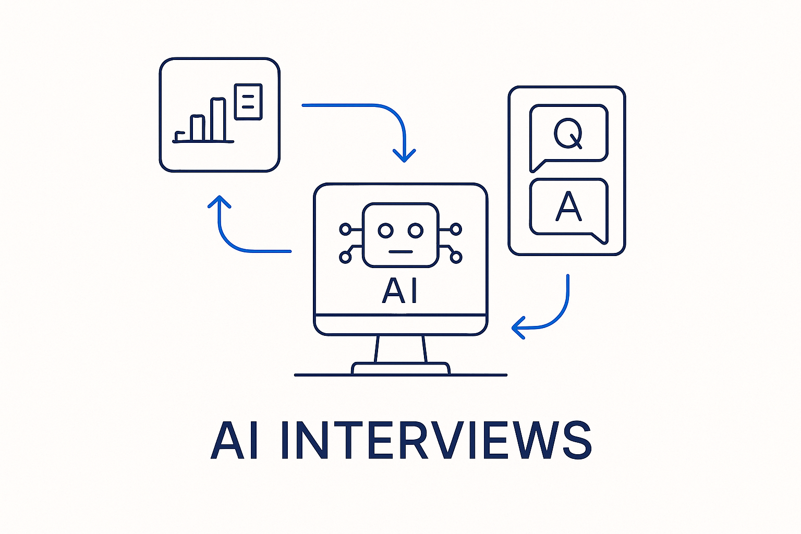

AI generates and conducts Q&A and interviews with stakeholders — but only after it has data: the captured metadata, plus the rules, skills and instructions it needs to ask the right questions.

> AI generates and conducts Q&A and interviews with stakeholders — but only after it has data: the captured metadata, plus the rules, skills and instructions it needs to ask the right questions.
Once the gaps and inconsistencies are known, the pipeline closes them by asking the people who know. AI generates the questionnaires and conducts the Q&A — interviews with the relevant stakeholders, who are often already visible in the underlying documentation and the code check-ins. The domain experts fill the holes the documents left; the knowledge workers curate the answers rather than rubber-stamp them; and the results are written back as explanatory metadata.
The dependency is the whole point: AI can only interview well once it has data. It needs the captured metadata, the extracted structure, and the detected gaps to know *what* to ask — and it needs the rules, skills and instructions (themselves metadata: markdown with frontmatter) to know *how* to ask it. Point an AI at a blank room and it asks generic questions; give it the structured context and it asks the sharp, specific ones that actually move the model forward. Interviews are not step one; they are what becomes possible after capture and gap-hunting.
The output feeds the feedback loop: every answer sharpens the metadata, and every sharpened model makes the next interview better. This is understanding before modeling done at scale — AI-generated questions, human-curated answers, all captured as metadata.
Where it lives: the method layer of Breakthrough Modeling — AI asks the right questions, once it has the data to.